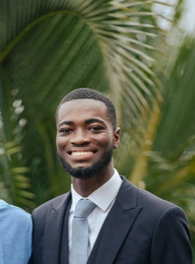
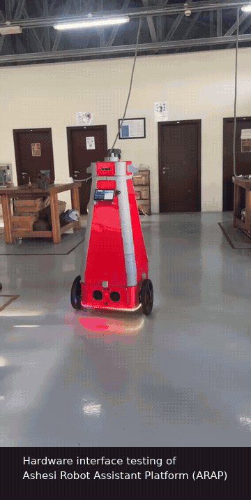
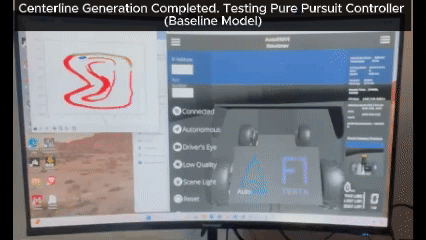

Introduction to Machine Learning (CS452)
Teaching Assistant | Ashesi University | 2024
Linear and Logistic Regression, Support Vector Machines, Naive Bayes

I am a Master's student in Advanced Robotics at École Centrale de Nantes, interested in the intersection of artificial intelligence and robot navigation. I previously worked as a faculty intern at Ashesi University (Ghana), serving as a Research and Teaching Assistant. I have been privileged to explore Embedded Machine Learning, Mobile Robotics and Motion Capture Systems for Drones.

Ongoing Research | Ashesi University | Aug 2025 - Present
ARAP is a campus robot designed to give visitors guided tours while providing students and researchers with a platform for working on real-world robotics problems. I contributed to building the software infrastructure needed to operate and simulate the robot. This included developing C++ ROS 2 Control hardware interfaces for motor communication and encoder feedback, as well as integrating ultrasonic and GPS sensors. I also worked on the robot's description package, creating and configuring its URDF/Xacro models and Gazebo simulation environment. To tie these components together, I developed ROS 2 launch files for hardware bringup, robot visualisation, hardware operation and simulation, including multi-robot configurations.

Ongoing Research | Ashesi University | Aug 2025 - Jan 2026
To improve the Introduction to AI and Robotics (CS353) course, I upgraded the Limo cobot platform from ROS2 Foxy to ROS2 Humble. This involved disassembling the Limo to access the NVIDIA board's SSD, flashing it with JetPack 6.1 for Ubuntu 22.04, installing ROS2 Humble, and resolving package dependencies and API compatibility issues. I validated the upgrade by testing all student lab exercises to ensure full functionality.

Competition | Ashesi University (ARC Lab) | Sept 2024 - May 2025
Developed perception and localization systems for the F1TENTH Autonomous Racing Competition with the ARC Lab. Created a sensor fusion state estimator (IMU + wheel encoders) and designed a LiDAR-based centerline extraction algorithm.

IEEE 9th International Conference on Adaptive Science and Technology, 2024
TL;DR: A machine learning system using accelerometer and altimeter data to classify walking terrains, with an LSTM model achieving 96% accuracy by capturing temporal dependencies in time-series data, demonstrating potential for real-time deployment in low-cost wearable devices.
Introduction to Machine Learning (CS452)
Teaching Assistant | Ashesi University | 2024
Linear and Logistic Regression, Support Vector Machines, Naive Bayes
Introduction to AI and Robotics (CS353)
Teaching Assistant | Ashesi University | 2025
Locomotion, Manipulation, Sensing, Vision, Path Planning, ROS2, URDF/Xacro
Computer Vision (CS463)
Teaching Assistant | Ashesi University | 2025
CNNs, ResNet, GoogLeNet, GANs, Object Detection
Bridging Math and ML
Co-Tutorial Facilitator | IndabaX Ghana | 2025
Principal Component Analysis (PCA), Dot Product, Cross Product
Mediocre Answers In High-Stakes Fields: Who Pays the Price?
AI Awareness Week | Ashesi University | October 2025